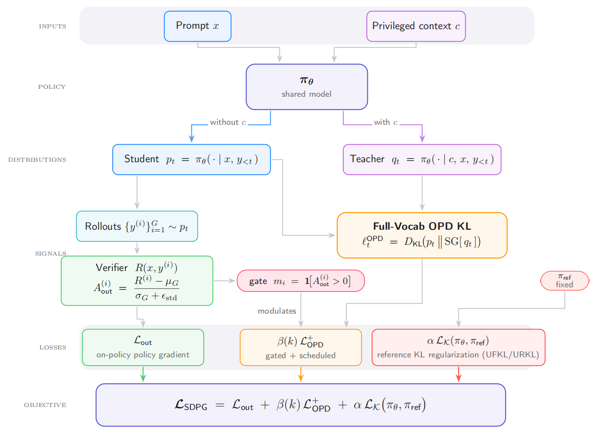

Outcome policy gradient
SDPG keeps the binary verifier objective used in RLVR and computes group-relative advantages over sampled responses, preserving the selection pressure that helps the policy discover correct solutions.
LLM Reasoning Post-Training
SDPG combines verifier-based RLVR with exact full-vocabulary on-policy self-distillation, turning privileged reasoning context into dense token-level supervision while preserving reward-driven exploration.
University of California, Los Angeles · Princeton AI Laboratory
* Equal contribution · † Corresponding author

On-policy self-distillation, where a language model conditions on privileged context to supervise its own generations, is a promising source of dense supervision for sparse-reward reinforcement learning. SDPG instantiates this signal as an auxiliary full-vocabulary student-to-teacher reverse KL loss and combines it with group-relative verifier advantages, normalized standard deviation, and reference-policy KL regularization. Empirically, SDPG improves stability and performance over RLVR and self-distillation baselines.
Method
SDPG trains one deployable policy under two views of the same model: an ordinary student view that sees only the problem, and a privileged teacher view that additionally sees answer-side context. The method keeps the verifier as the final arbiter, while using the privileged distribution to shape token-level credit assignment on useful rollouts.
SDPG keeps the binary verifier objective used in RLVR and computes group-relative advantages over sampled responses, preserving the selection pressure that helps the policy discover correct solutions.
The same model serves as student and privileged teacher. On sampled prefixes, SDPG minimizes $D_{\mathrm{KL}}(p_t\|\mathrm{SG}[q_t])$, giving dense token-level guidance without a separate larger teacher.
Reference-policy KL, positive-advantage gating, and a warmup-decay schedule for $\beta(k)$ keep the privileged signal useful without over-constraining the reasoning policy.
With the privileged branch detached, reverse-KL OPD has the same fixed-prefix student-side gradient as a detached-sampling update with a centered log teacher/student ratio advantage.
Objective Analysis
The SDPG loss is deliberately decomposed into sparse selection, dense privileged guidance, and policy anchoring. This makes the optimization behavior easier to reason about than treating self-distillation as a black-box auxiliary loss.
The verifier supplies sequence-level rewards. Normalizing within a group keeps the update comparative: correct rollouts are promoted, poor rollouts are suppressed, and uninformative groups contribute little when all sampled rewards match.
Instead of distilling only the sampled token, SDPG compares the full next-token distributions. This gives dense supervision over every vocabulary item at a sampled reasoning prefix.
Privileged context can still produce plausible continuations on a globally wrong trajectory. The gate applies OPD only when the verifier prefers the rollout within its group.
Early warmup avoids trusting a noisy privileged target too soon. Late decay releases the model from information that is unavailable at inference after the useful signal has been internalized.
SDPG evaluates unnormalized KL regularization against a fixed reference policy. The reverse form penalizes squared log drift, while the forward form uses an inverse-ratio plus log-ratio term. Both variants keep the student close enough to the reference model that dense distillation does not dominate the reward objective.
Experiments
Experiments use Qwen3 models trained for 400 steps on DAPO-Math-17k and evaluated on AIME2024, AIME2025, and AMC23 with pass@1 mean@32.
| Method | AIME24 | AIME25 | AMC23 | |||
|---|---|---|---|---|---|---|
| Last | Best | Last | Best | Last | Best | |
| GRPO | 0.280 | 0.316 | 0.242 | 0.279 | 0.714 | 0.739 |
| RLSD | 0.378 | 0.395 | 0.300 | 0.304 | 0.813 | 0.813 |
| SDPG-URKL | 0.380 | 0.401 | 0.307 | 0.308 | 0.863 | 0.863 |
| SDPG-UFKL | 0.380 | 0.408 | 0.327 | 0.335 | 0.858 | 0.870 |
The top row tracks held-out benchmark accuracy. SDPG-URKL and SDPG-UFKL stay above GRPO and RLSD for most of training on AIME24, AIME25, and AMC23. The bottom row explains why: reward rises quickly, entropy remains healthy, and response length does not collapse.
Smaller models make pure self-distillation more fragile. OPCD degrades after step 250, while SDPG keeps the verifier objective and policy anchor active, preventing the sharp response-length and reward collapse seen in the self-distillation-only baseline.
Ablation
Removing the OPD term loses the early-training accuracy advantage on AIME24 and AIME25, confirming that privileged full-vocabulary distillation is the main source of fast convergence on hard tasks.
Removing the reference-policy KL can keep accuracy competitive, but leads to shortened responses and rising entropy, indicating weaker control over coherent reasoning patterns.
@article{liu2026selfdistilled,
title = {Self-Distilled Policy Gradient},
author = {Liu, Yifeng and Zhang, Shiyuan and Zhang, Yifan and Gu, Quanquan},
year = {2026}
}